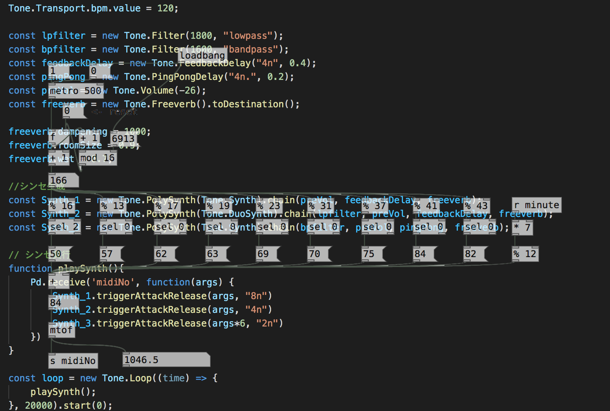

Creative Plus
Blog Media
Use WebPd
Description
We have posted an experiment using the Pure Data runtime of JavaScript that plays audio in a browser using a Web Audio API called "WebPd".
「WebPd」というWeb Audio APIを使用してブラウザーでオーディオを再生するJavaScriptのPureDataランタイムを使った実験を掲載しています。
WebPd only
Demo Page Link：
webpd Demo 1
About this demo:
Japanese article
WebPd and Tone.js
Demo Page Link：
Webpd ToneJS Demo 1
About this demo:
Japanese article

WebPd and p5.js
Demo Page Link：
WebPd p5Js Demo 1
About this demo:
Japanese article
WebPd and cables.gl
Demo Page Link：
WebPd cables.gl Demo 1
About this demo:
Japanese article